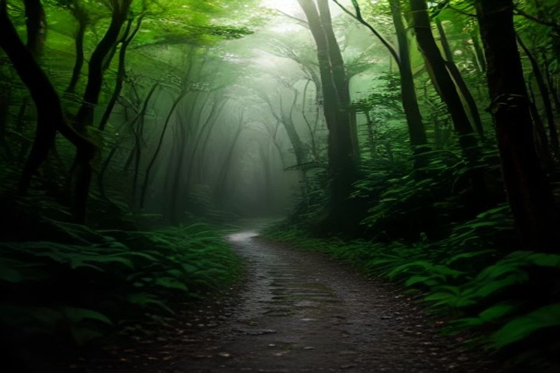

Ribeiro Frio is Madeira's mountain pause button — a trout farm and a forest clearing 900 metres up, where the road north crosses from cloud into pine and laurel. From here, the easiest proper walk on the island leads to a viewpoint that most visitors rank above hikes three times as long. Here's what it actually involves.
What is Ribeiro Frio, and where is it in Madeira?
Ribeiro Frio is a small mountain hamlet in the central highlands, about 30 kilometres from Funchal and roughly a 35–40 minute drive north on the ER103, the road that climbs from the south coast toward Faial and Santana. The name means "cold stream," which is accurate — the settlement sits at around 900 metres, wrapped in Laurisilva forest, and is usually several degrees cooler and greener than the coast. It exists almost entirely around one thing: a state-run trout hatchery built in the 1940s, now surrounded by a small forest park, a café-restaurant and the trailhead for two of Madeira's best-known walks.

What is the trout farm at Ribeiro Frio?
It's a working rainbow trout hatchery, the Centro de Aquicultura, and it's free to walk through. Stone-lined ponds terrace down through the forest park, thick with fish of different sizes, shaded by camellias and towering til trees. It takes ten or fifteen minutes to see properly, there's no ticket booth, and the adjoining restaurant serves the trout it raises — grilled, with almonds, is the local way to order it. Even travellers with no interest in the walk to Balcões find it worth the stop on a drive across the island.
What is the Miradouro dos Balcões walk actually like?
It's flat, short and beginner-friendly — the easiest of Madeira's well-known viewpoint walks. The trail, PR11 Vereda dos Balcões, follows the Levada da Serra do Faial for about 1.5 kilometres from the Ribeiro Frio trailhead, gaining almost no altitude as it threads through dense laurel forest thick with tree heather, moss and the occasional Madeira firecrest darting alongside the path. It ends abruptly at a rocky platform — the "balcony" the name refers to — with a wide, open view that feels disproportionate to how little effort it took to get there. Round trip, most people are back at the car park inside ninety minutes, including time at the viewpoint.
Do you need to book PR11 in 2026?
Yes. Every numbered PR trail on Madeira, Balcões included, now requires a free time-slot reservation through the official SIMplifica portal before you arrive, part of the island-wide system introduced to manage overcrowding and the genuinely tight parking at busy trailheads. Booking takes a couple of minutes online, slots are released in advance, and turning up without one risks being turned away when the small Ribeiro Frio car park fills — which it regularly does by mid-morning in summer. Arrive early, or plan around a quieter slot.
What can you actually see from the viewpoint?
On a clear day, Balcões looks straight down the Ribeira da Metade valley to Madeira's two highest points — Pico Ruivo at 1,862 metres and Pico do Arieiro at 1,818 metres — with terraced slopes and unbroken laurel forest filling the gorge between them. It's one of the few spots on the island where you see both summits framed together rather than from beneath one of them, which is why photographers rate it well above its short walking time would suggest. Cloud rolls through often at this altitude, so morning generally gives better odds of a clear view than afternoon.
Is it worth combining with Pico do Arieiro?
It pairs naturally, since both sit on the same mountain road and Ribeiro Frio is only about 20 minutes' drive from the Arieiro car park. A common plan is sunrise at Arieiro, breakfast and the trout ponds at Ribeiro Frio once the light has flattened out, then the short walk to Balcões before heading back down to the coast — a half-day loop that covers the best of Madeira's central mountains without a single steep climb.
What should you bring?
Layers and a light rain jacket matter more here than hiking boots — trainers are fine for the flat, well-maintained levada path, but the highlands run noticeably cooler and wetter than Funchal, and cloud can roll in within minutes. Bring cash or a card for the restaurant, since the trout farm itself has no facilities beyond the ponds and a small shop.
It's also a useful reminder of how much of Madeira's character sits above the water we spend our days on — the same island, cut by the same volcanic geology, just seen from 900 metres instead of sea level. If the mountains are your morning, the coast makes a natural way to end the day: a private boat trip with Chifbay out of Marina do Funchal covers Cabo Girão and the coves beyond in a few unhurried hours, drinks and food included.
Balcões proves the rule wrong: on Madeira, the biggest view doesn't always cost the biggest climb.
Ribeiro Frio rewards anyone willing to leave the coast for an afternoon — a cold stream, a trout farm, and ninety easy minutes to one of the island's best mountain views.